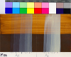
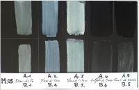

Terre de Nocera Umbra,
images MEB - 13/5/2011
Cliquer sur les images pour
les agrandir -
CNRS © copyright
3) effectuer
différents tests grâce à l'aide de Jean-Pierre Brazs, artiste plasticien
et spécialiste des techniques picturales. Jean-Pierre réalise notamment des
échantillons pour des laboratoires étudiant les
matériaux picturaux (C2RMF, le laboratoire du Louvre ou l'Institut des nanosciences
de l'UPMC par exemple). Son savoir-faire et ses connaissances se sont avérés
particulièrement précieux
dans cette enquête.
Ses échantillons, sur une série de fonds
terreux et noirs, nous ont en effet permis d'établir que la
terre dite blanche de Nocera Umbra a un pouvoir colorant sensiblement
limité à la présence de fer (oxyde jaune) et constitue en réalité une
charge picturale finement teintée de jaune, non un pigment blanc,
du moins pas dans un liant ordinaire. Nous reviendrons sur ce point
essentiel.
Ainsi - et c'est la
réponse que nous proposons -, la charge n'étant pas
blanche, il fallait lui adjoindre un blanc véritable pour obtenir
le fameux "bleu Degottex" par diffusion Rayleigh. Il ne restait
plus qu'à effectuer une telle manipulation pour tenter de simuler (non
reconstituer, cf. Réserves) le procédé du
peintre disparu.
La simulation
Celle-ci a eu lieu le 3 septembre 2011.
Les tests ont permis d'obtenir un éventail de nuances très proches de
celles des tableaux bleus de Jean Degottex (voir partie basse de l'image
ci-dessous, à agrandir).
Ces
vélatures sont agrémentées d'une légère "note jaune" propre à la charge
qui est inhabituelle, la terre de Nocera Umbra. Cette coloration, ici
plus présente que dans l'image
ci-dessus montrant un détail de tableau, peut
bien sûr être ajustée en fonction des volumes respectifs de la charge et
du blanc.

Echantillon M 08,
3/9/2011 (liant acrylique)
avec charte Kodak
Cliquer sur l'image pour
l'agrandir (6Mo)
Jean-Pierre Brazs / CRFP © copyright
Ici, le ratio est de 1 volume de pigments pour 6
de charge. La
coloration jaune est donc sensible mais la charge
demeure étonnamment transparente.
Cette transparence permet par exemple
d'observer que le blanc de
zinc, à gauche, est beaucoup moins couvrant que l'autre blanc (de
titane), comme on peut le constater
en particulier dans la moitié supérieure, claire, de l'image où il
apparaît "presque fantomatique", pour des ratios égaux. Ces différences d'opacité
pigmentaire entre les deux blancs sont bien connues.
Enfin, on constate que le jaune et le bleu
du fond et la vélature bleutée ne donnent pas un vert, phénomène qui
apparaît quelquefois dans les glacis très diffus, un point apparemment
accessoire mais sur lequel nous aurons l'occasion de revenir dans les
conclusions.
Données de
l'expérimentation (ECH.M 08)
|
Source : Centre de Recherche sur
les Faits Picturaux
|
|
Echantillon vélatures
Vélatures blanches sur terre d'ombre naturelle
N° inventaire ECH.M 08 date réalisation 3 septembre 2011
Localisation Atelier C, Paris
Opérateur Jean-Pierre Brazs
|
|
Dimensions : 14 x 22
cm
Support : Medium 3mm
Préparation : enduit très absorbant (Caparol, liant cellulosique /
blanc de titane, blanc de Meudon)
Fond sombre : 1,5 ml pigment : terre d'ombre naturelle (Chypre) (CH.HG)
DOLCI TR 0274 (JPB 000-56) + 1 ml eau + 3ml liant vinylique Marin
11 dilué dans 10% eau
Fond clair : idem + 3ml eau
Vélatures :
Liant : liant acrylique Marin 35 + 10% eau
* [gauche] blanc
de zinc / Blanc de Nocera
Pâte picturale : 1,5 ml blanc de zinc , 9 ml Blanc de Nocera + 4
ml eau + 15 ml liant
(1 couche / 2 c. / 3 c. / 4 c. / 5c.
* [droite] blanc de titane / Blanc de Nocera
Pâte picturale : 1,5 ml blanc de titane, 9ml Blanc de Nocera + 4
ml eau + 15 ml liant
(1 couche / 2 c. / 3 c. / 4 c. / 5c.
|
Conclusions
Un sérieux problème de vocabulaire
Le terme "blanc de Nocera" et
quelques autres tels "blanc de
baryum" sont abusifs au point d'induire en erreur de par les
habitudes mentales (associations) qu'ils sollicitent,
même lorsque l'on sait qu'ils sont presque
transparents. Notre réflexion aurait été grandement simplifiée si
leur usage avait été abandonné et remplacé par les appellations "terre
de ..." ou mieux : "charge de...". En effet, il aurait été plus facile de
comprendre pourquoi Jean Degottex aurait non pas "ajouté du blanc à du blanc
pour en faire un bleu" mais "ajouté un blanc à une charge pour en
faire un bleu". On passe en effet d'une affirmation absurde à l'énoncé
cohérent d'un problème.
Parenthèse. Concernant le "blanc de baryum"
(ou de barytine plus précisément, on le nomme également "blanc fixe")
qui est aussi un bon exemple, François Perego lui attribue un
indice
de réfraction proche de celui d'un liant "réfringent", ce qui explique
qu'il se comporte dans celui-ci comme une charge (citation en note
[3]).
D'autres échantillons réalisés par
Jean-Pierre Brazs, par exemple celui qui est montré ci-dessous, ont confirmé cette
affirmation et il en va sensiblement de même pour la charge de Nocera,
bien que leurs compositions soient très différentes.

Echantillon M 03,
3/9/2011
Cliquer sur l'image pour
l'agrandir -
Jean-Pierre Brazs / CRFP © copyright
Dans cet échantillon où le
fond visible est une terre d'ombre brûlée de Chypre, les couleurs
liées à l'huile sont en haut et les acryliques en bas.
On constate le
manque évident de coloration de la barytine et de la terre de Nocera.
Comme l'indiquent les images MEB
(lien), la charge ombrienne appartient à la
famille des "blancs de calcaire", c'est-à-dire des
craies et des calcaires qui certes sont sensiblement blancs ou
clairs, mais à l'état sec. Et pourtant, l'on continue à utiliser ces
termes sans discernement.
Donc notre première conclusion est la
suivante :
Les termes blanc de
Nocera, blanc de baryum, blanc de calcaire, voire blanc de silice (?) et
possiblement quelques autres devraient sans doute, selon nous, être
abandonnés par les auteurs, en particulier dans le
contexte des utilisations classiques en peinture, afin d'éviter les
confusions qui sont aujourd'hui démultipliées par les moyens de
communication.
Par ailleurs, comme nous allons le voir
c'est proprement une approche véritablement contemporaine de l'emploi
des charges qui est en jeu au-delà de ce balbutiement lexical trompeur.
Ouvertures, implications
1. Notre
enquête ouvre sur une autre enquête : les
maîtres italiens ont-ils utilisé cette même terre de Nocera ? A
l'époque (à partir du XVIème siècle), le seul blanc couvrant
comparable à ceux dont nous disposons aujourd'hui était la
céruse (mis à part le blanc de zinc qui était
déjà disponible mais très coûteux avant les procédés industriels). Comparable seulement pour le facteur
couvrant car elle implique des contraintes de par son caractère siccatif
pour les huiles. L'acrylique n'existait pas. Il s'agit
donc, pour compléter l'enquête, d'expérimenter l'emploi conjoint d'huile à peindre, de céruse et de
charge de Nocera Umbra.
2. L'emploi
de cette charge légèrement teintée ouvre sur une approche particulière
de la pratique de la peinture. En effet il est particulièrement original
d'employer une charge pour sa coloration et non pour son volume. C'est
l'inverse qui est presque toujours recherché : on veut supprimer la
couleur, vue comme "parasite", de ce type de matériaux.
Jean Degottex avait tout loisir d'employer
un gel acrylique incolore plutôt qu'une terre teintée. Il a semble-t-il
préféré une autre solution.
La grande subtilité de
cet artiste est (sous toutes réserves) d'avoir
retourné le problème pour obtenir in fine une gamme de teintes à la fois
riches et fines car dans les tons très clairs, en glacis, on n'obtient
pas les mélanges de couleurs auxquels notre oeil est habitué. En
l'occurrence, le bleu de la vélature ne s'ajoute pas au jaune de la
charge de Nocera pour donner un vert comme on aurait pu s'y attendre [4].
Cette pratique ouvre donc un champ de
recherches picturales :
* quels
résultats obtiendrait-on avec une "craie" de type Nocera, mais teintée
de cuivre ou d'un autre élément et non de fer ? Pourrait-on
constituer une palette de charges naturellement et subtilement colorées ? [5]
* ou encore,
comment mettre à profit par exemple l'aspect grisé donné par la
silice colloïdale
que l'on peut employer en peinture à l'huile ou acrylique. La question
se pose en effet aussi bien pour les charges synthétiques
contemporaines.
D'autres matériaux qui sont aujourd'hui
rejetés, mal aimés ou oubliés à cause de leur coloration, peuvent à
l'inverse être mis à profit dans des perspectives comparables dans le
principe à cette élégante technique qu'est la vélature "à la Degottex".
La vélature est de plus elle-même un champ de recherche à part, trop ignoré et pourtant
ouvert et passionnant car il peut bénéficier de
connaissances et de matériaux contemporains. Ce sujet est abordé dans un autre
article (lien) où il
est notamment question des vélatures "chaudes", basées sur une autre
conséquence de la diffusion Rayleigh.
Réserves
Les informations en relation avec la
méthode et les intentions de Jean Degottex sont données sous toute
réserve puisqu'il ne s'agit ici que de simulations. Une certitude ne
pourrait être acquise que par l'analyse scientifique directe de ses
toiles.
Nous avons seulement démontré que
l'artiste a pu employer ce procédé, ce qui peut expliquer :
1° la
référence qu'il fit au "blanc Umber",
2° la
richesse chromatique de ses tableaux bleus.
Emmanuel Luc,
éditeur internet,
le 9/9/2011
Remerciements
à :
* Isabelle-de-Rome,
dont l'aide a été majeure et féconde. Il n'est pas exagéré de dire, même si la
formule paraît convenue, que sans elle rien n'aurait été possible,
* Caroline pour
l'acuité de ses questionnements, ses informations et sa ténacité,
* Jean-Pierre Brazs, qui a
"fait la preuve" et a activement contribué à la réflexion comme à la
mise à l'épreuve des hypothèses nées au fil de cette enquête,
* Jean-Louis et son confrère
Jacques du CNRS pour l'analyse qui nous a permis de franchir un cap important.
Merci aussi pour la beauté de ces images déconcertantes de coquillages du monde
de l'infime.
_______
[1]
Léonard de VINCI, Traité de la peinture. 1478-1518. Trad. André Chastel.
Editions Berger-Levrault. Paris, 1987. (p.202)
[2]
Cette information capitale est confirmée. Une référence écrite sera
prochainement donnée.
[3]
« L"indice de réfraction moyen n = 1,640-1,641 ; il est donc
semi-transparent dans les liants comme l'huile, où il se comporte alors
comme une charge (...). », p. 93, Dictionnaire des matériaux du
peintre, François Perego, Belin, Paris, janvier 2005.
[4]
Ce phénomène pourrait faire l'objet d'une prochaine enquête.
[5]
Le fait d'utiliser un composé qui s'est constitué géologiquement n'est
pas équivalent à la juxtaposition de quelques éléments constitutifs.
Même les structures sont différentes. Une terre faisant oeuvre de charge
et étant porteuse de couleur est un mélange intime qui ne peut pas être
confondu avec une charge mêlée de pigments sur la palette, tout comme
une terre de Sienne ne ressemble pas à un mélange d'oxydes de fer et de
manganèse réalisé par le peintre.
D'une certaine manière, la
terre de Nocera peut être vue aussi bien comme une charge colorée que
comme un pigment ultra-transparent entièrement original.
Dès lors, la perspective
de mettre à l'épreuve d'autres charges colorées devient envisageable.


{kind=link}
{kind=link}
{kind=link}
{kind=link}
{kind=link}
{kind=link}
{kind=link}